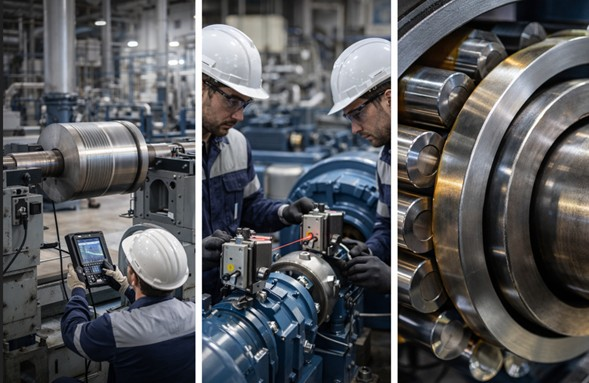
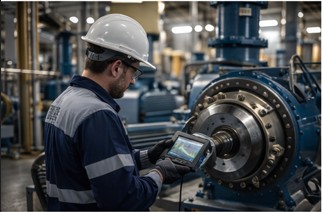

Servicios de Mantenimiento Predictivo en Bogotá
Diagnóstico técnico, confiabilidad y reducción de paradas no programadas.
Análisis de vibraciones industriales
Medición y diagnóstico para identificar fallas mecánicas como desbalanceo, desalineación, holguras, resonancia y defectos en rodamientos/engranajes.
- Medición en puntos críticos
- Interpretación espectral (FFT)
- Recomendaciones y acciones correctivas
- Reporte técnico profesional


Balanceo dinámico
Reduce vibraciones excesivas causadas por desbalanceo en rotores (ventiladores, sopladores, motores, bombas) mejorando disponibilidad y vida útil.
- Balanceo in-situ
- Validación post-corrección
- Recomendación de tolerancias
Mantenimiento predictivo
Implementamos una estrategia basada en condición para programar intervenciones con datos reales, evitando correctivos costosos y paradas no planificadas.
- Planificación por criticidad
- Tendencias y alarmas
- Rondas predictivas periódicas

Monitoreo de condición
Seguimiento para activos críticos mediante mediciones periódicas o monitoreo continuo (según necesidad), con reportes, tendencias y recomendaciones.
- Indicadores de condición
- Comparativo histórico
- Priorización de mantenimiento
¿Quieres una cotización rápida?
Escríbenos y cuéntanos tipo de equipo, potencia, RPM y ubicación.